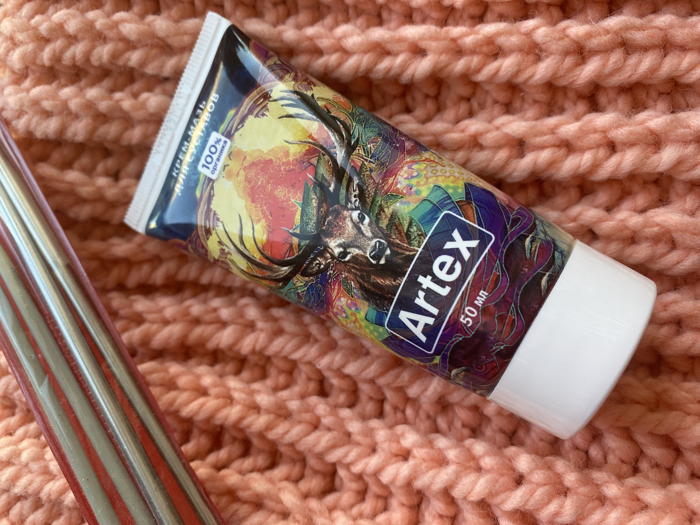

El tenista y entrenador español Carlos Moya Llompart de 46 años, compartió los secretos de unas articulaciones sanas y explicó por qué no utiliza pomadas ni medicamentos de venta en farmacias
El entrenador de tenis español Carlos Moya Llompart cumplió 46 años en agosto de 2022. En una entrevista concedida a RTVE a principios de otoño, criticó duramente los medicamentos que se venden en las cadenas de farmacias.
Poca gente sabe que Carlos no sólo entrena a sus pupilos (que han ganado repetidamente varias competiciones), sino que también trata sus articulaciones, sobre las que los tenistas soportan las cargas más pesadas.
A Carlos Moya Llompart le gusta decir que "el 95% del éxito del tenis depende de la flexibilidad, la amplitud de movimiento y la dureza de las articulaciones".
Carlos ha concedido una entrevista exclusiva a nuestra publicación. No sólo nos habló de cómo recuperar la salud de las articulaciones, sino que volvió a quejarse de la escasa eficacia de las pomadas de farmacia.
Díganme cómo se pueden curar las articulaciones de una persona normal, ¡si en las farmacias simplemente no existen los medicamentos que funcionen! ¡Y así es en todo el país!- Carlos, todos vemos la belleza del tenis cuando lo vemos por televisión o desde los palcos, y nos alegramos sinceramente de las victorias de nuestros tenistas. Pero detrás de todo eso hay un trabajo duro y un gran estrés, también para las articulaciones. ¿Es así? ¿Y cómo consiguen nuestros tenistas mantener sanas las articulaciones?
- Sí, es cierto. Cualquier articulación tiende a envejecer y desgastarse - el tejido cartilaginoso no es eterno - simplemente se desgasta con el tiempo. Pues bien, los tenistas que se pasan el día entrenando desgastan sus articulaciones entre 7 y 8 veces más rápido. Los científicos lo han comprobado.
¡Un tenista que no puede estar seguro de sus articulaciones no es un tenista! Al fin y al cabo, el más mínimo problema durante un gran torneo puede llevar al colapso. Y un deportista puede estar preparándose para grandes torneos durante años. Por eso mi equipo y yo vigilamos de cerca la salud de las articulaciones de nuestros jugadores. Es nuestro trabajo.
- Cuando nos duelen las articulaciones solemos ir a la farmacia más cercana a comprar medicamentos. Hoy en día, la oferta de medicamentos para el tratamiento de las articulaciones es enorme. Dígame, ¿usted también compra pomadas en las farmacias? Seguro que lo sabe todo sobre ellas. En una de sus entrevistas dijo que no hay buenos medicamentos en las farmacias. ¿Es eso cierto?
- Bueno, en primer lugar, no los compramos, nos los da el gobierno. Hay una clínica especial para atletas profesionales en España, por supuesto, vamos allí para el tratamiento y el chequeo.
Pero, para ser sincero, estoy muy familiarizado con muchos medicamentos para las articulaciones. Tanto por trabajo como comprándolos yo mismo - después de todo, también soy ex tenista. Y se lo diré. Es un horror lo que se vende en las farmacias hoy en día. ¡No se puede tratar con estos medicamentos!
Hoy en día hablan a menudo en la televisión de la anarquía de las farmacias. Bueno, esto es cierto. No sé en otros ámbitos, pero en el tratamiento de las articulaciones, ¡eso seguro! En lugar de los medicamentos normales que existen hoy en día y con cuya ayuda se pueden regenerar completamente las articulaciones, venden, disculpen mi brusquedad, una porquería. Esto no es medicina, ¡es basura! Y los venden por una cantidad enorme de dinero.
Ni siquiera los medicamentos caros pueden curar las articulaciones, y mucho menos los baratos. Y nadie hace nada contra esta pesadilla.
- ¿Con qué tratan hoy en día los tenistas sus articulaciones?
- Esencialmente con lo mismo que antes. Cuando yo era tenista, nuestros científicos inventaron un medicamento maravilloso. Después de su invención, nuestros tenistas empezaron a ocupar los primeros puestos en las clasificaciones mundiales. Y esto se debe en gran parte al hecho de que este medicamento fortalecía las articulaciones de los deportistas. Yo mismo lo utilicé. Tuvo un efecto sorprendente.
Seguimos utilizando este fármaco. Más precisamente, su versión mejoró con los años. Los científicos no han inventado nada mejor. En aquellos años se consideraba experimental, por lo que se llamaba PDS-109, ahora se llama Fortuflex. Y ahora está disponible para todo el mundo.

Se puede utilizar para reparar incluso las articulaciones muy dañadas (incluso nuestro equipo olímpico lo utiliza), así como para tratar las articulaciones que han comenzado a romperse y desgastarse debido a la vejez - yo personalmente tomé varios cursos de tratamiento con este medicamento y cada vez las articulaciones quedaron casi como nuevas.
No los venden en las farmacias. ¿Por qué? Porque los descarados farmacéuticos no quieren que la gente se ponga sana, sino que siga enferma y vuelva a por más.
¿Qué es Fortuflex y dónde se puede comprar barato?
Es una pregunta que decidimos hacerle al jefe del servicio médico de la RFET, asesor de la IFT, profesor y jefe del equipo médico de la Clínica de Medicina del Tenis Ángel Ruiz-Cotorro.
 «Si te dicen que las articulaciones no se pueden reparar, ¡no te lo creas! ¡Es mentira! Las articulaciones se recuperan bien, incluso en la vejez, ¡su capacidad de recuperación es inherente a la naturaleza!»
«Si te dicen que las articulaciones no se pueden reparar, ¡no te lo creas! ¡Es mentira! Las articulaciones se recuperan bien, incluso en la vejez, ¡su capacidad de recuperación es inherente a la naturaleza!»
- Ángel, ¿podría contarnos cómo funciona Fortuflex y por qué le permite mejorar sus articulaciones?
- A ver si lo puedo explicar de manera sencilla. LAS ARTICULACIONES SE REGENERAN MUY RÁPIDA Y FÁCILMENTE. Está incorporado en ellas por naturaleza. Lo único que hace falta es que su cuerpo inicie por sí mismo el proceso de rehabilitación articular.
El esfuerzo físico frecuente y la edad hacen que el riego sanguíneo y la nutrición de la cápsula articular empeoren y se reduzcan drásticamente; como consecuencia, el cartílago pierde su elasticidad, se seca rápidamente y se agrieta. Esto provoca primero el agrietamiento de las articulaciones, luego dolor, hinchazón y, si se produce una infección, artritis, artrosis u otras enfermedades.
En otras palabras, el origen de los problemas está en la cápsula articular y los vasos sanguíneos del hueso adyacente. ¿Qué han hecho los científicos españoles? Han desarrollado un producto con una penetración máxima en la cápsula articular, gracias a la cual las articulaciones y el cartílago reciben todo el complejo de ingredientes que necesitan.
- ¿Qué tiene de importante Fortuflex? ¿Por qué funciona tan bien para la regeneración incluso de articulaciones debilitadas?
- Bueno, en primer lugar, contiene extracto de castaño. La especialidad del castaño es su capacidad única para licuar y eliminar los depósitos de sal. Instantáneamente hace que los "depósitos" de sal en las articulaciones se aflojen, y después de 15-19 días de uso regular, disuelve completamente las sales en las articulaciones y la columna vertebral. Estará de acuerdo en que se trata de una propiedad muy útil.
Fortuflex también contiene potasio fácilmente absorbible, vitamina D y varios otros elementos que ayudan a acelerar la recuperación de las articulaciones. Por lo tanto, es mejor utilizar este complejo si usted tiene dolor en las articulaciones y quiere curarlos.
En segundo lugar, los científicos han añadido extractos de plantas medicinales raras en forma natural activa inalterada. ¡Es decir, no tiene sintéticos ni productos químicos!
Lista de enfermedades de las articulaciones, que ayuda a curar Fortuflex:
- Osteoartritis
- Artritis
- Artralgia
- Bursitis
- Higroma
- Osteoporosis
- Osteocondrosis
- Periartritis
- Sinovitis
- Reumatismo
- Enfermedad de Reiter
- Enfermedad de Still
- Enfermedad de Bechterew
- Síndrome de Felty
- ¿Este producto sólo está disponible para los atletas profesionales o también puede adquirirlo la gente corriente?
- Desde hace más de un año, está disponible para todos. El fabricante de Fortuflex ha lanzado una campaña especial de promoción para atraer la atención sobre el producto. Todo el mundo puede conseguir Fortuflex con un descuento del 50% como parte de esta promoción. El producto puede entregarse en cualquier lugar del país por mensajería.
- Rellene un formulario de pedido oficial
- Nuestro gestor le llamará para especificar la dirección de entrega
- En 1-3 días recibirá su Fortuflex por mensajería
- Ángel, muchas gracias por las referencias. ¿Hay algo que quiera desear a nuestros lectores?
- De nada. Mi deseo es que las articulaciones estén sanas. Recuerde. Debe empezar a tratar sus articulaciones al menor signo de empeoramiento de la movilidad o de dolor (incluso durante los cambios de tiempo, un síntoma importante del inicio de la destrucción articular). De este modo evitará su destrucción, que suele ir acompañada de fuertes dolores y acaba en incapacidad.
ATENCIÓN: ¡ Estudios recientes han confirmado que la época más favorable para empezar a utilizar Fortuflex es entre e ! Las fuertes fluctuaciones de temperatura aceleran el metabolismo y ayudan a la recuperación de las articulaciones.
Угадай за какой дверью скидка
Комментарии
Жанна Г.
Большое спасибо за рекомендации. О том, что сейчас практически нет нормальных лекарств в аптеках, говорят все. Заказала Artex. Очень надеюсь, что поможет. Колени болят сил нет.
Максим Ахтемов
Тоже заказал. Цена прямо порадовала. Хоть кто-то думает про пенсионеров.
Владимир
Читал про этот препарат в российской медицинской газете в прошлом году. Там его называли революцией в лечении заболеваний суставов.
Станислав
Полностью подтверждаю. Artex – отличное средство для восстановления суставов, есть опыт лечения им. Болел локоть долго, иногда сильно воспалялся. Врач посоветовал пройти курс лечения этим кремом, и он мне помог. Сейчас сустав не болит совсем.
Константин Аронов
Тоже есть опыт использования Artex и тоже положительный. Лечил артроз. Сустав полностью восстановились, что показало соответствующее обследование.
Михаил Рябрев
Здравствуйте всем! Мне 61 год. 7 лет назад стали сильно опухать суставы кистей пальцев, голеностоп, колен. Боль была жуткая, ночами не спал, рыдал от боли. Периодами бывало, вообще ничего не болело, а бывало очень сильно. Лечащий врач посоветовал мне использовать Artex. Это было полгода назад. Очень хорошо помог. Суставы перестали опухать. Сейчас уже даже забыл, что мучился когда-то них. Рекомендую Artex всем!
Елена Черникова
Да, такое реально может быть только в России. Никто и никогда не будет думать о больных – особенно аптеки. Знаю случай рака суставов. Лечил их лечил, а потом просто умер. Кошмар
Артемий
Спасибо. Прочитал подробнее о Artex. Впечатляет!
Павел Акинин
Выписал. Первый раз, что-либо выписываю в интернете, но оказалось это просто. Надо только принять участие в розыгрыше и заполнить форму, а сотрудники потом сами перезванивают и спрашивают, на какой адрес доставить.
Татьяна
Прочитала статью и сразу решила заказать, чтобы попробовать. Дело в том, что обычные лекарства мне помогали ненадолго — остеохондроз, как мне говорили, сложно вылечить. Теперь отписываюсь о результатах. Artex пришел очень быстро. Уже через 4-5 дней чувствую такое облегчение, что просто не могла не написать здесь об этом. Спасибо большое, теперь хоть смогу нормально жить!
Ксения Белинская
Это что-то с чем-то! Результат просто превзошел мои ожидания. Весь артрит на пальцах рук исчез за 14 дней! Заказала ещё несколько упаковок своим подругам.
Михаил
Выписал. Приятно, когда хорошие лекарства продаются так дешево.
Варвара Михайловна
Отличный препарат. Применяем вместе с мужем. У обоих уже есть улучшение. Пользуюсь всего неделю. Мне 57 лет, мужу – 61 год. Передачу как то по ТВ смотрела, говорили, что Artex здорово помогает.
Наталья Морозова
Поддерживаю! Очень эффективное средство от проблем со спиной! Сколиоз как рукой сняло.
Виктор К.
Несколько десятков лет пытался вылечить запущенный радикулит и все зря. Решил попробовать Artex, о котором здесь рассказывал профессор, спина прошла за 2 недели. Теперь бегаю как молодой. И спрашивается, где же он был раньше?
Олеся
Спасибо!